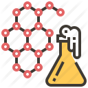
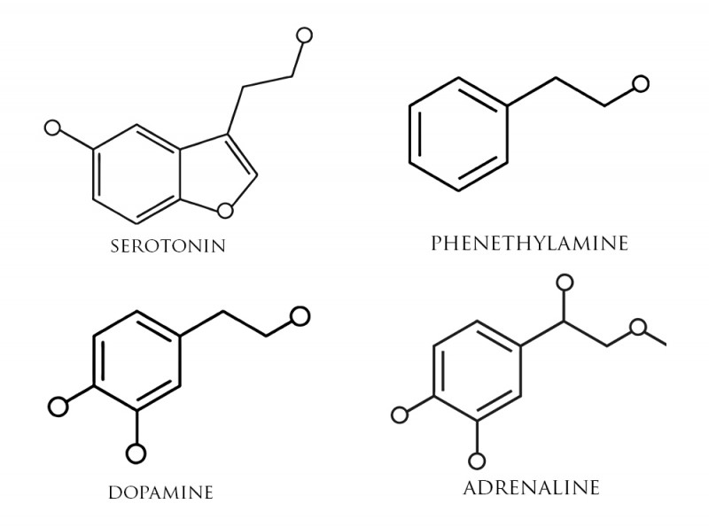
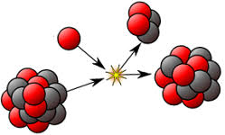
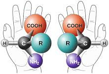
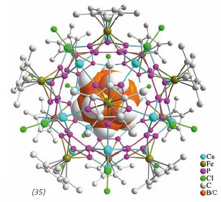
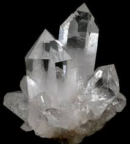

This is the branch of chemistry concerned with the chemical and physicochemical processes that occur within living organisms. Chemical processes govern a variety of biological functions in living organisms from mental health to digestion. Click for more info on biochemistry


Nuclear Chemistry:
Nuclear chemistry is the subfield of chemistry dealing with radioactivity, nuclear processes, such as nuclear transmutation, and nuclear properties. It also includes the study and use of nuclear processes in non-radioactive areas of human activity. Click for more info on nuclear chemistry

Organic Chemistry:
This field of chemistry focuses on the chemistry of carbon compounds (other than simple salts such as carbonates, oxides, and carbides). Click for more info on organic chemistry

Inorganic Chemistry:
As the name suggests this is the branch of chemistry that deals with inorganic compounds. Acids, bases, salts, and oxides are some of the basic topics for this field. Click for more info on inorganic chemistry


Quantum Chemistry:
Quantum chemistry is a branch of chemistry whose primary focus is the application of quantum mechanics in physical models and experiments of chemical systems. It is also called molecular quantum mechanics. Click for more info on quantum chemistry